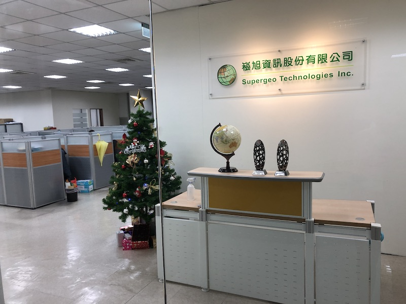
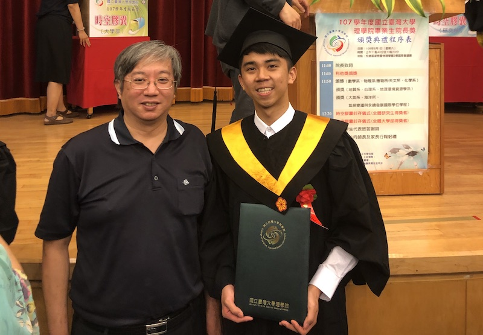

Resume
Internship in Inc. Supergeo
In my senior college student life, I actively seek internship opportunity in geography industry. Fortunately, several prestigious Geo-Tech companies are situated in Neihu Science Park, Taipei and some of them offer internship. After several e-mail check and a face-to-face interview, I was successfully accepted as internship in autumn,2018.
During my internship, I learn and assist Project department to update online database and check system flaws. Also, I help department to revise website product manuals. Internship is not compulsory in my university graduation requirement; instead, it was a journey to learn what is it like after graduation from geography university. I really learn a lot in my internship and get more familiar with relevent working enviornment.
Completion of Geography Major in National Taiwan University, NTU
 I found myself passionate at Geography since my high school period. After a tough entrance exam to university, I was admitted to the most prestigious university in Taiwan, that is, National Taiwan university. Every year, there are approximately 140,000 high school students taking university entrance exam and only 8,500 of them can enter NTU. In other words, 6% and above can enrolled in NTU and share premium education resourse much more than other universities in Taiwan.
During studying in NTU, I was trained to handle geographical data like remote sensing data and geostatistic data. In the 3rd grade, I grew thick interest in in Geospatial Computational Science. Accordingly, I applied to Pro. Tzai-Huang Wen as my mentor and successfully recieve research grant in College Student Reserch Program from Ministry of Science and Technology in Taiwan (research ID : 107-2813-C-002-134-M ). My research is named "Location and Path of Mobile Police Station – Location Allocation Analysis". This research aimed at composing an active allocation patten in order to make resource used more effieciently.
Chinese, English and Japanese Proficiency
 Chinese (also knowned as Madarin) is my mother language. There are several official language in Taiwan like Taiwanese, Hakka, Abborginal language. However, main official language is Madarin. Accordingly, I was trained standardly in writing and speaking in Madarin perfectly.
Chinese (also knowned as Madarin) is my mother language. There are several official language in Taiwan like Taiwanese, Hakka, Abborginal language. However, main official language is Madarin. Accordingly, I was trained standardly in writing and speaking in Madarin perfectly.
English is a global language. Therefore I learned English since 7 year old. After school training and self-study, I can speak, read, write, listen English in academic environment and even working environment. As to language certicate, I've passed GEPT High-Medium level and I've taken TOEFL test and got 98 points.There is no significant language barrier in English for me.
Japan share deep historic connection with Taiwan. From 1895 to 1945, Taiwan was colonized by Japan. Even now, Japanese language can easily be spotted in Taiwan everywhere, especially in imported merchandise and restaurants. Because in Taiwan Japan language can be seen and hear everywhere, I decided to learn Japanese when I was a freshman in NTU. After 4-year study, I passed JLPT N2 japanese language certificate and gain basic writing and speaking ability in normal living life.